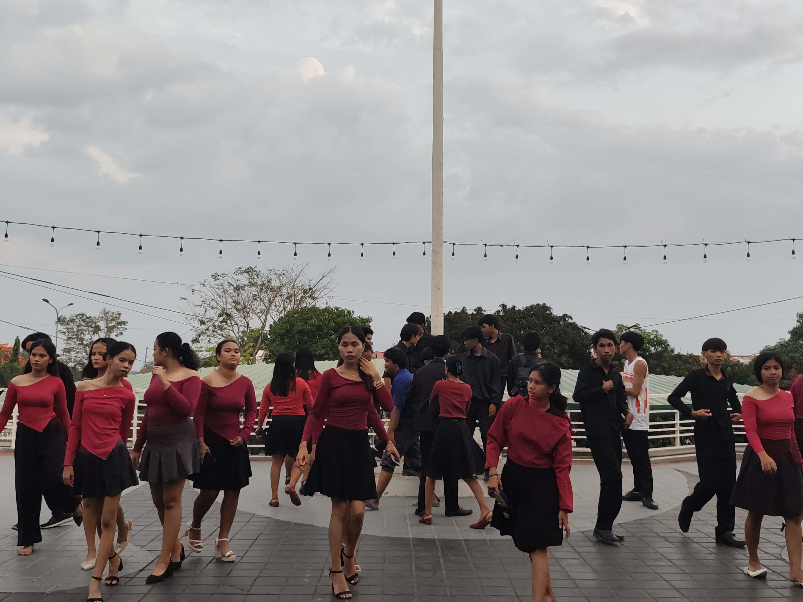

Mga Tradisyonal na Sayaw ng Pilipinas
Isang gabay para sa mga mag-aaral — tuklasin ang kasaysayan, hakbang, at kultura ng tatlong piling sayaw ng ating bansa.
Tatlong piling sayaw ng Pilipinas — bawat isa ay may sariling kwento, ritmo, at kultura.

Ang website na ito ay isang proyektong pang-aral na ginawa ng 12 na mag-aaral mga developer, designer, mananaliksik, at manunulat na nagkaisa upang magawa ito.
Ang bawat pahina ng sayaw ay dinisenyo. Maaari panoorin ang mga video upang maging gabay ang bawat tutorial.
Kilalanin ang 12 na Gumawa →